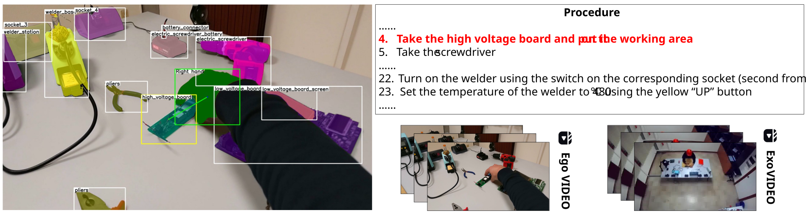

Abstract
ENIGMA-360 is a new multi-view dataset acquired in a real industrial scenario. The dataset is composed of 180 egocentric and 180 exocentric procedural videos temporally synchronized, offering complementary information of the same scene. The 360 videos have been labeled with temporal and spatial annotations, enabling the study of different aspects of human behavior in the industrial domain. We provide baseline experiments for 3 tasks: Temporal Action Segmentation, Keystep Recognition, Egocentric Human-Object Interaction Detection. The dataset and its annotations are publicly available.
The ENIGMA360 Dataset
180 videos from the worker's point of view.
180 videos from a fixed camera.
Each egocentric video is aligned with an exocentric one.
Temporal & spatial labels, segmentation masks, 3D models.

Data Annotation
Tasks
People